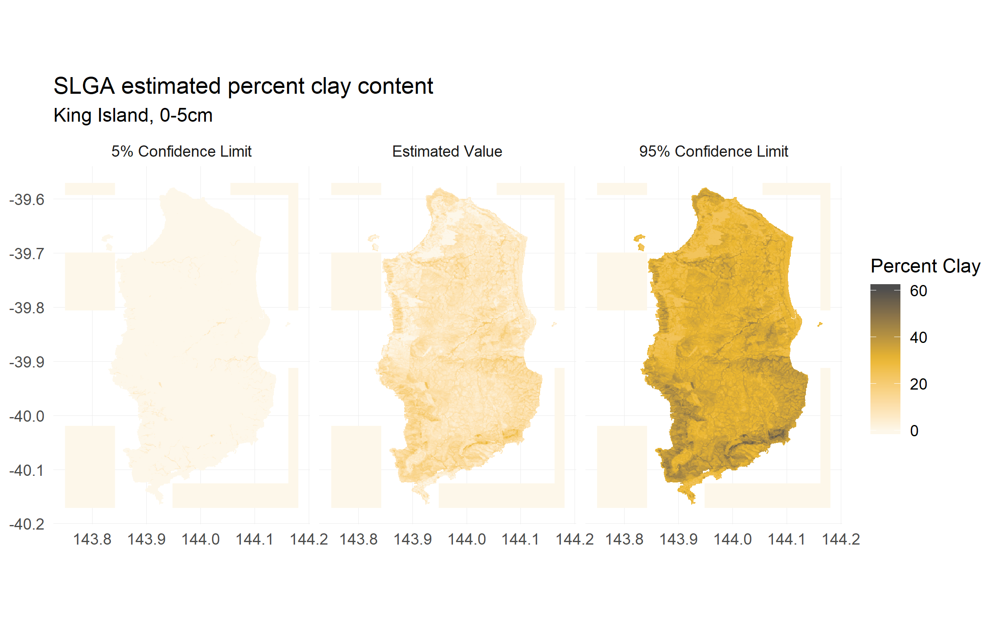

library(raster)
library(slga)
library(ggplot2)
# get surface clay content for King Island
aoi <- c(143.75, -40.17, 144.18, -39.57)
ki_surface_clay <- get_slga_data(product = 'TAS', attribute = 'CLY',
component = 'all', depth = 1,
aoi = aoi, write_out = FALSE)New R package: slga
R
soils
better living through APIs
raster
soils data for the people
Lauren O’Brien ![]()
Background
Catching up on package blogging, and juuuust managing to equal the low, low bar of four posts per year that I appear to have set myself.
This post is about slga, a data-access package I wrote a month or so ago to facilitate R-based access to the Soil and Landscape Grid of Australia, a set of geostatistically-modelled soil attributes and accompanying environmental covariate datasets.
slga is another one of those packages that happened because I read some interesting code (in this case, Ross Searle’s WCS access demo script) and decided to tinker a bit and then… failed to stop. Whoops. The basic idea is to hook into the set of OGC Web Coverage Services available for the SLGA and make it as easy as possible to retrieve subsets of the parent datasets. My only requirement was that the subsets be ‘clean’; i.e. a perfect match in terms of cell value, cell size and alignment against the parent dataset. And thus the following:
retrieves this:

WCS services aren’t quite designed for this task - they’re mainly geared towards dynamic data access via web map portals or GIS GUIs, so they default to a lot of dynamic rescaling and resampling to make that efficient. Still, with a bit of mucking about its possible to bend them towards simple subsetting of very large raster datasets, at pretty reasonable speed (depending, of course, on one’s internet connection, insert NBN joke here).
My other goal for this project was to figure out pkgdown, so I’m not going to reiterate how slga works in this post. I’m just going to smugly link to slga's vignette where it sits on the package website.
Thanks to
I really didn’t get OGC web services at all before diving in to this. The official documentation is pretty comprehensive, but I couldn’t find much higher level material about working with them. I definitely wouldn’t have known where to start without picking through Ross’ script; slga only exists because of his work (as does the grid itself!).
I found Lorenzo Busetto’s tutorial post immensely helpful when getting started with pkgdown. Datacamp’s deployment tutorial was also super good. For customising my site, I left the default bootstrap theme in place and just overrode some CSS for nicer colours. Lest anyone think I’m actually good at CSS, this was largely accomplished by clicking ‘Inspect Element’ in Firefox and copypasting the relevant CSS code out. It is therefore probable that my extra.css file is an affront to god and man alike, but whatever, it works.
Lastly, this trick for mosaicing a list of rasters is the bees’ knees, and enabled tiling requests over larger areas. That said, I still wouldn’t advise trying to download massive data extents at once with this package. Once you start going after whole state’s worth of data, you’re better off downloading the entire parent dataset from the CSIRO Data Access Portal and cropping it.
Gripes
The only thing I don’t love about this project is the low-ish unit test coverage. I’m not sure how best to cover some of the core functions, since they hit web services, and the tests shouldn’t be eating bandwidth or relying on a http 200 return. If anyone has any advice, fire away.
I also really wish the WCS spec had some kind of source-align/target-align flag a la gdalwarp’s ‘-tap’ option, because that would remove the need for about half the code I wrote for this package. Might stretching the concept too far though, idk.
Anyway so there that is, if you’re working in Aus and you need a bit of quick soil and/or terrain data, this may be useful. I’m also drafting up a matching package for GeoScience Australia’s web services, so watch this space.
Citation
BibTeX citation:
@unpublished{o'brien2018,
author = {Lauren O’Brien},
title = {New {R} Package: Slga},
date = {2018-12-31},
url = {https://obrl-soil.github.io/posts/2018-12-31_slga-announcement},
langid = {en}
}
For attribution, please cite this work as:
Lauren O’Brien. 2018. “New R Package: Slga.” https://obrl-soil.github.io/posts/2018-12-31_slga-announcement.